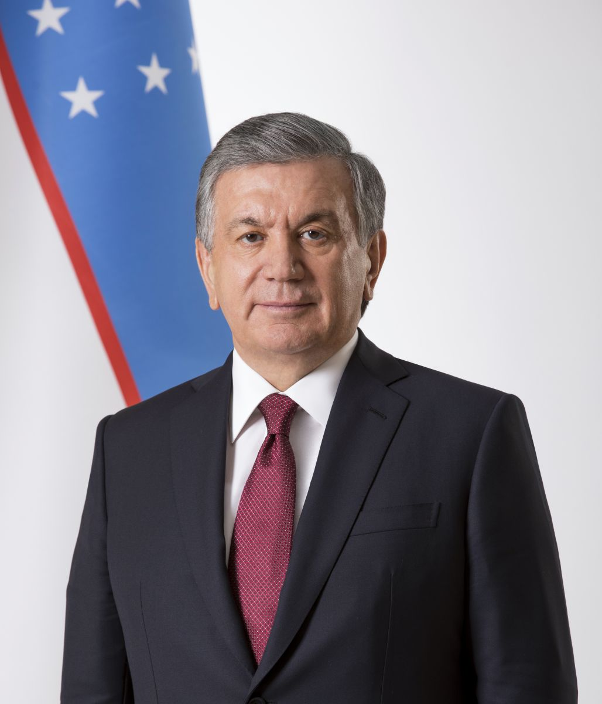

Товарооборот Узбекистана и ОАЭ вырос на 40%: Masdar и AMEA Power расширят проекты
16 октября в Ташкенте на первом заседании Инвестиционного совета топливно-энергетической отрасли президент Шавкат Мирзиёев встретился с гендиректором Masdar Мохамедом Джамилем Аль-Рамахи и председателем AMEA Power Хуссейном Аль-Новайсом; товарооборот вырос на 40% с начала 2026 года.

Товарооборот между Узбекистаном и Объединёнными Арабскими Эмиратами (ОАЭ) вырос на 40% с начала 2026 года, а стороны договорились ускорить и расширить совместные проекты. 16 октября в Ташкенте на полях первого заседания Инвестиционного совета топливно-энергетической отрасли президент Шавкат Мирзиёев принял руководителей ведущих компаний ОАЭ.
Кто участвовал
Во встрече приняли участие генеральный директор Masdar Мохамед Джамиль Аль-Рамахи и председатель AMEA Power Хуссейн Аль-Новайс. Masdar — базирующаяся в Абу-Даби компания в сфере возобновляемой энергетики, основанная в 2006 году; AMEA Power специализируется на солнечных, ветровых проектах и накоплении энергии.
Согласованные направления
Стороны договорились ускорить совместные проекты в сферах зелёной энергетики, современной инфраструктуры, промышленной и межотраслевой кооперации, туризма и услуг.

Портфель Masdar
Портфель Masdar в Узбекистане включает девять проектов общей стоимостью 4,2 млрд долларов и суммарной мощностью 4,8 ГВт. С участием Masdar введены в эксплуатацию пять солнечных электростанций общей мощностью 1 247 МВт, ветропарк «Зарафшан» на 500 МВт и система накопления энергии на 63 МВт; в Кашкадарьинской области строится солнечная фотоэлектростанция на 300 МВт.
Проекты AMEA Power
AMEA Power строит в Ташкенте систему накопления энергии на основе аккумуляторов мощностью 150 МВт; у компании запланированы проекты и в других регионах страны.
Контекст
ОАЭ в последние годы стали одним из крупных инвесторов Узбекистана, особенно в возобновляемой энергетике. Рост товарооборота на 40% и новые проекты указывают на углубление экономического сотрудничества двух государств.